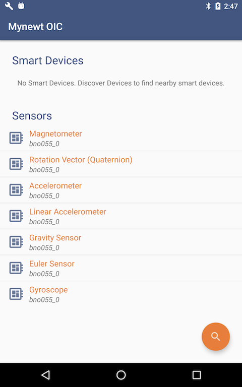

Enabling OIC Sensor Data Monitoring in the sensors_test Application¶
This tutorial shows you how to enable sensor data monitoring via the OIC protocol over BLE transport in the sensors_test application. It extends the example application in the Enabling an Off-Board Sensor in an Existing Application Tutorial and assumes that you have worked through that tutorial.
Like the other off-board sensor tutorials, this tutorial uses an nRF52-DK board connected to an off-board BNO055 sensor device.
This tutorial shows you how to:
Create and build the target to enable sensor OIC support in the sensors_test application.
Use the Mynewt Smart Device Controller Android or iOS app to view the sensor data from the device.
Step 1: Creating and Building the sensors_test Application Image¶
In this step of the tutorial, we set the following syscfg settings to create a target for the sensors_test application.
BNO055_OFBandI2C_0: Set to 1 to enable the BNO055 off-board sensor device and the I2C interface 0 in the nRF52 BSP.BLE_MAX_CONNECTIONS: Set the number of BLE connections to 4.MSYS_1_BLOCK_COUNT: Set the number of entries for the mbuf pool to 52.MSYS_1_BLOCK_SIZE: Set the size of mbuf entry to 100.OC_APP_RESOURCES: Set the number of server resources to 12.
Note: The SENSOR_OIC, OC_SERVER, BLE_ROLE_PERIPHERAL and
BLE_ROLE_BROADCASTER syscfg settings must be enabled to add OIC
sensor monitoring over BLE transport support to an application. You do
not need to set these settings in the target because the
apps/sensors_test package enables the SENSORS_OIC and
OC_SERVER syscfg settings by default, and the net/nimble package
enables the BLE_ROLE_PERIPHERAL and BLE_ROLE_BROADCASTER
settings by default.
1. Run the newt target create command to create the target. We name
the target nrf52_bno055_oic_test.
$ newt target create nrf52_bno055_oic_test
Target targets/nrf52_bno055_oic_test successfully created
$
2. Run the newt target set command to set the app, bsp, and
build_profile variables for the target:
$ newt target set nrf52_bno055_oic_test app=@apache-mynewt-core/apps/sensors_test bsp=@apache-mynewt-core/hw/bsp/nrf52dk build_profile=debug
Target targets/nrf52_bno055_oic_test successfully set target.app to @apache-mynewt-core/apps/sensors_test
Target targets/nrf52_bno055_oic_test successfully set target.bsp to @apache-mynewt-core/hw/bsp/nrf52dk
Target targets/nrf52_bno055_oic_test successfully set target.build_profile to debug
$
3. Run the newt target set command to set I2C_0=1,
BNO055_OFB=1, BLE_MAX_CONNECTIONS=4, MSYS_1_BLOCK_COUNT=52,
MSYS_1_BLOCK_SIZE=100, and OC_APP_RESOURCES=11.
Note: If you want to disable the sensor and bno055 shell
commands, also set SENSOR_CLI=0 and BNO055_CLI=0.
$ newt target set nrf52_bno055_oic_test syscfg=BNO055_OFB=1:I2C_0=1:BLE_MAX_CONNECTIONS=4:MSYS_1_BLOCK_COUNT=52:MSYS_1_BLOCK_SIZE=100:OC_APP_RESOURCES=11
Target targets/nrf52_bno055_oic_test successfully set target.syscfg to BNO055_OFB=1:I2C_0=1:BLE_MAX_CONNECTIONS=4:MSYS_1_BLOCK_COUNT=52:MSYS_1_BLOCK_SIZE=100:OC_APP_RESOURCES=11
$
4. Run the newt build nrf52_bno055_oic_test and
newt create-image nrf52_bno055_oic_test 1.0.0 commands to build and
create the application image.
Step 2: Connecting the Sensor and Loading the Images to the Board¶
Perform the following steps to reboot the board with the new images:
Connect the BNO055 sensor to the nRF52-DK board. See the Enabling an Off-Board Sensor in an Existing Application Tutorial for instructions.
Note: You do not need the serial connection from your computer to the nRF52-DK board for this tutorial because we are not using the shell to view the sensor data.
Run the
newt load nrf52_bootcommand to load the bootloader.Run the
newt load nrf52_bno055_oic_testcommand to load the application image.Power the device OFF and ON to reboot.
Step 3: Viewing Sensor Data from the Mynewt Smart Device Controller¶
Start the Mynewt Smart Device Controller app on your iOS or Android device to view the sensor data. If you have not installed the Mynewt Smart Device Controller follow the instructions in the Sensor Tutorials Overview to install the app, then continue with this step of the tutorial.
The Mynewt Smart Device Controller scans for the devices when it starts up and displays the sensors it can view. The following is an example from the Android App:
Select
Accelerometerto see the sensor data samples:
Move your BNO055 sensor device around to see the values for the coordinates change.